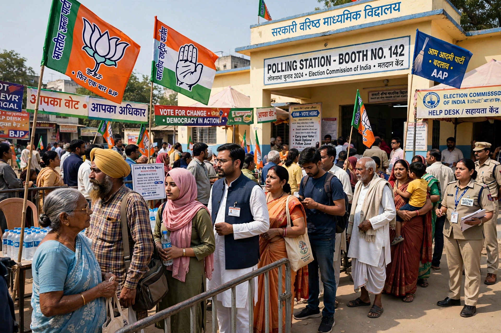

Caste politics in IndiaCaste politics in India refers to the role of caste in Indian politics. Caste, a hereditary system of social stratification rooted in the concepts of varna and jati, has shaped electoral mobilisation, party organisation, and government policy since independence, including through reservations (affirmative action) for Scheduled Castes, Scheduled Tribes and Other Backward Classes.
Under British colonial rule, caste was enumerated in censuses and became a basis for administrative classification. After independence in 1947, the Constitution abolished untouchability and provided reservations in legislatures, education and government employment for historically disadvantaged groups. Leaders such as B. R. Ambedkar, himself from a Scheduled Caste, made caste justice central to democratic politics.
The Mandal Commission (1979-1980) recommended 27% reservation for Other Backward Classes in central government jobs. Its implementation in 1990 by the V. P. Singh government triggered nationwide protests and realigned party politics, strengthening regional and caste-based parties such as the Samajwadi Party, Rashtriya Janata Dal and Bahujan Samaj Party, the latter founded by Kanshi Ram to represent Dalits.
Parties often field candidates matching the dominant caste composition of a constituency and construct coalitions of castes. Scholars describe this as both democratic deepening — bringing marginalised groups into power — and as a source of patronage and polarisation. Caste associations, khap panchayats in Haryana and western Uttar Pradesh, and caste-based census demands remain politically salient, notably in Bihar's 2023 caste survey.
Critics argue caste politics entrenches divisions and that economic criteria should supplement caste-based reservation, a view partly reflected in the 103rd Amendment (2019) creating a 10% quota for Economically Weaker Sections. Supporters counter that caste remains a lived reality of discrimination and representation cannot be separated from it.